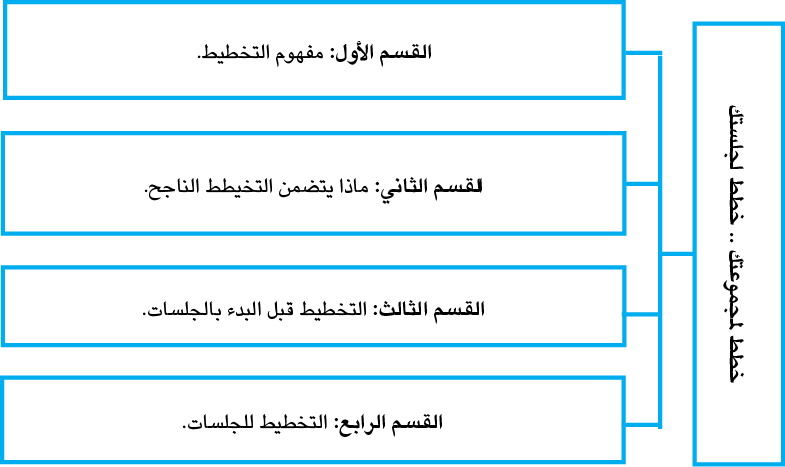

|
هي عمليَّة تفاعليّةٌ بين المُرشد والمسترشد بهدف مساعدة المسترشد على تحقيق أهدافه، وحلِّ مشكلاته، وتتضمَّنُ العمليَّة الإرشاديَّة مجموعةً منَ المراحل والخطوات المترابطة والمتسلسلة، التي تستهدف تحقيق الأهدافِ الإرشاديَّة المَرْجوة. يُعَدُّ التَّخطيطُ المتقدم للمجموعاتِ طريقةً إستراتيجيَّةً تمكن الأفراد من زيادة إمكاناتهم الإبداعية من خلال تنظيم وقتهم ومواردِهم بطريقة منظمة، فهو يتضمَّنُ تقسيمَ المهام المعقَّدة إلى كتلٍ يُمكِنُ التَّحكُّم فيها، وتخصيص فترات زمنية محددة لكلِّ كتلة، وتكريسِ الاهتمام المركّز لمَهَمَّةٍ واحدةٍ في كل مرَّة. تتكوّنُ الإدارةُ من مجموعةٍ منَ الوظائف الرَّئيسة وهي: التَّخطيط، والتَّنظيم، والتَّوظيف، والقيادة، والتخطيط هو أهمُّ وظيفةٍ؛ لأنّه الأساسُ الذي تُبْنى عليه الوظائف الأُخرى، والتَّخطيط هو وضعُ مخطَّطٍ؛ لتحقيقِ هدف معين من خلال تحديدِ الموارد والمهامِّ والإجراءات والجداول الضَّروريّة لتحقيقه، بحيث يُعبِّرُ الهدفَ عنِ الغرض المستقبليِّ الذي تسعى المنظمة للوصول إليه وتحقيقه، وهذا يوضِّحُ الفرقَ بين الهدف والخطة؛ فالهدفُ يُحدِّد الغاية المستقبليَّة، بينما الخطَّة تُحدِّدُ الوسيلةَ المتَّبعةَ لتحقيقٍ يشملُ اصطلاح التَّخطيط لكلا الفكرتيْن، من حيثُ أنّه يحدِّدُ أهدافَ المنظمة المستقبليّة، ويحدِّدُ الوسائل المناسبة لتحقيق هذه الأهداف، ويقومُ بالتَّخطيطِ - عادةً - مديرُ المنظمة؛ إذ يتنبَأُ بالمخاطر التي يُمكنُ أنْ تحدُثَ في المستقبل، وهذا يُساعدُ على متابعةِ العملِ لفترةأطولَ. كما تُساعدُ عمليَّة التَّخطيط المديرَ على حلِّ المشكلاتِ، وتطوير إستراتيجيات؛ لتسهيلِ العملِ، وإعداد المسار المناسب لتحقيقِ الهدف في النهاية. |
2.1 الهدف العام للوحدة الدراسيّة
|
عزيزيَ الطالبَ ، يتوقَّع منك بعد دراستك للوحدة الدَّراسية التَّعرف إلى كيفيَّة التَّخطيط للمجموعة والجلسة، من خلال التَّعرُّف إلى: أ. التَّخطيط قبل المجموعة. ب. التَّخطيط للصورة الكبرى. ت. التَّخطيط للجلسات. ث. التَّخطيط لمراحل الجلسة. ج. الأخطاء المتكرِّرة في التخطيط. |
|
عزيزيَ الطالب،وفْقًا للهدف العام للوحدة، وبعدَ دراستك للوحدة الدِّراسية، يتوقَّع منك تحقيق النواتج الآتية: ●تمكِن الدَّارس من امتلاك المهارات والأساليب الأساسية؛ للتَّعرُّف إلى تَخطيط المجموعة، والتَّخطيط ●للجلسة، بما يساعدُهُ مستقبلاً لبناءِ برنامجٍ إرشاديٍّ جمعيّ. ●تحديد مفهوم التَّخطيط وأهميَّتِه. ●تحديد المهارات اللازمة للتَّخطيط للمجموعة والجلسة. ●تحديد الأخطاء الشَّائعة للتَّخطيط للمجموعة والجلسة. |
4.1 الموارد والقراءات المساندة
|
عزيزيَ الطالب،أثناءَ دراستِكَ لهذه الوحدة، قد تَجِدُ أنك بحاجة إلى مزيدٍ منَ التَّوضيحات والمعلومات حول ما جاء فيها من أفكار ومفاهيم، فيمكنك الرُّجوع إلى الموارد والمراجع التالية: 13. مصادر إلكترونية: ●صفحة المقرر الالكترونية: الخطة والعروض التقديمية والوسائط المتعددة. ●الصفوف الافتراضية: |
تتناول الوحدة الخامسة موضوعاتٍ ومفاهيمَ أساسيَّةً في التَّخطيط النَّاجح، وعواملَ نجاح التَّخطيط قبل البدء، وأثناءَ تنفيذ الجلسة الإرشاديَّة، كما تتضمن بعضَ الأخطاء التي يقَعُ فيها القادةُ في عمليَّة التَّخطيط.

|
ماذا يتضمَّنُ التَّخطيط؟ يتضمَّنُ التَّخطيط النَّاجحُ العديدَ منَ الخطوات، وهي: تحديد الأهداف لفترة معيَّنةٍ منَ الزمن، صياغة أفكارٍ لتحديدِ مَسارِ عملٍ يمُكنة تحقيق الأهداف. تقييم جميع المسارات البديلة التي وُضِعَتْ، واختيار الأفضل من بينها؛ لتحقيق الأهداف المُحدَّدة، وتوفير قراءة عقلانية للمستقبل؛ لتحقيق أهداف المسترشد. |
|
|
الجلس إيّةموارد مساندة https://www.google.com/search?sca_esv=811d106c3f469370&rlz=1C1SQJL_enPS102 تعليمية 5PS1025&sxsrf=ADLYWILCsevyvXh20iTuTmUvQtR3QJ9ycQ:1730405863504&q=%D |

|
|
لا ينبغي أنْ يقودَ قائدٌ أيِّ مجموعةٍ للعلاجِ النَّفسي أكثرَ من مجموعةٍ في اليوم الواحد، على ألا يزيدَ الحدُّ الأقصى عن ثلاث مجموعات |

|
|
من أَجْل تقديمِ جلسةٍ إرشاديَّةٍ ناجحةٍ، يُمْكِنُ اتِّباعُ الخطواتِ التالية: 1. تحديد أهداف الجلسة: يجب على المستشار تحديد أهداف الجلسة قبل بدئها، والتأكد من فهم المشكلة التي يواجهها العميل، والتركيز على الحلول. 2. إنشاء جو داعم: يجب على المستشار إنشاء جوٍّ داعمٍ ومريح للعميل، وتقديم الاهتمام والتركيز على المشكلة التي يواجهها العميل. 3. الاستماع الفعَّال: يجب على المستشار الاستماع بشكل فعال لمشكلة العميل، والتَّأكُّد من فهمها فهمًا صحيحا. 4. المتابعة: يجب على المستشار متابعة العميل بعد الجلسة للتأكد من تطبيق الحلول، وتقديم الدعم اللازم. 5. الحفاظ على سريَّة المعلومات: يجبُ على المستشار الحفاظُ على سريَّة معلومات العميل والعمل على بناء علاقة ثقةٍ معه. |

|
يتطلَّبُ تقديمُ جلسة إرشاديَّةٍ ناجحةٍ الاستماعُ الفعَّالُ، وتحديدُ الأهداف، وتقديمُ الحلول والدعم، ومتابعةُ المسترشد، والحفاظُ على سريَّة المعلومات. |
|
|
النَّشاطَ اليوميَّ كنموذجٍ لرسمِ الخطط قبل البدء: |

لا يمكنُ التَّغافلُ عن أهمِّية التَّخطيط الدَّقيق للمجموعة، يذكر كودي 2008) Corey: إذا ما أردتَ أنْ تنجحَ مجموعتك، فإنَّ عليكَ تخصيصَ وقتٍ كافٍ للتَّخطيط، فإنَّ التَّخطيط يجبُ أنْ يبدأَ بوضعِ مُسَوَّدَةٍ لخطَّةٍ مكتوبةٍ، والتَّخطيط القبليّ للمجموعة، والتخطيط للجلسة، والتَّخطيط لكلاهما مهم.
وقد عرَّف أ. محمد فوزي العشري «التَّخطيط» بأنَّه تحديدُ الأهدافِ المرادُ تحقيقها ورَسمُ خطِّ السَّير إليها، وتحديدُ وسائل ذلك السَّير، مع وضوحِ التَّصوُّر لما يُمكن أنْ يحَدُث أثناءَ العملِ مِن المستجدات والتطوُّرات، ووَضْع ما يُناسبُ ذلك مِن طرُق التعامل؛ مِمَّا باتَ يسُمَّى بـ« الخطَّة والخطة البديلة» شرط أنْ يستهدفَ ذلك أكبرَ قدَرٍ ممكنٍ مِنَ المكاسب، وأقلَّ قدَرٍ ممكنٍ منَ الخسائر.
لا يتحَقَّقُ النَّجاحُ لكثيرٍ منَ المجموعات؛ بسببِ قلَّةِ التَّأكيد على التَّخطيط قبلَ المجموعة. يوضِّحُ جلادينج( 2008 ) Gladdig) ) ضرورةَ التَّخطيط قبل بدء المجموعة، أي أنَّ ديناميات المجموعة تبدأ قبل أن تنعقدَ المجموعة، وهناك اعتبارات عديدة تناولتْها الفصولُ السَّابقة تؤثِّر في تشكيل المجموعة، منها: حجمُ المجموعة، ونوعُها، وهل هي مفتوحة العضويّة، أم مقصورة على أعضاء قلائل، وطول الجلسات، ومكان اللقاءات.
هناك أربعةُ قراراتٍ أُخرى لا بُدَّ منِ اتِّخاذها عند تشكيل المجموعة، وهي:
1. ما عددُ الجلساتِ التي تلتقي فيها المجموعة؟
2. متى تلتقي المجموعة؟
3. مَنْ هم أعضاءُ المجموعة؟
4. كيف سيُختارُ الأعضاءُ؟
ما عددُ الجلساتِ التي تلتقي فيها المجموعة؟
تُنْجَزُ – عادة – مجموعاتٌ كثيرةٌ في فترة زمنيَّة معيَّنة، على سبيل المثال، ويُعْمَلُ جدولُ مجموعاتِ رعايةِ الطُّفولة، والتَّدريب على توكيد الذات، ومجموعات العلاج النَّفسيّ، والمجموعات التَّطوُّرية، والتَّعليميّة - فتلتقي هذه المجموعات في عددٍ معيَّنٍ منَ الجَلسات. هناك بعض المجموعات مثل: مجموعات الإرشاد النَّفسيّ، والعلاج النَّفسيّ، ومجموعة المَهام، والدَّعم، والمجموعات التَّطوريَّة - التي تبدأ دونَ أنْ يُخطِّطَ عددَ جلساتها، عادة، لكن منَ الافضل وضعُ حدودٍ؛ لأنَّ ذلك يُعطي الأعضاءَ فكرةُ عن طول الفترة التي يتمُّ فيها الأعضاء أيَّ عملٍ شخصيٍّ.
كما أنَّ هناك خياراً آخر، وهو السماح للأعضاء بتحديدِ عدد الجلسات عندما تلتقي المجموعة لأوَّل مرّة - غالباً - ما تكون هناك اعتبارات أُخرى هي التي تحدِّدُ عدد الجلسات، مثل طول الفصل الدِّراسي، مدى توفر القائد، وجود الأفراد المراد تقديم الخدمات لهم، ومقدار المعلومات التعليمية المراد تغطيتها.
تدريب ( 1 )
|
ما عددُ الجلساتِ التي تلتقي فيها المجموعة؟ |
لا بُدَّ مِنْ وضعِ عامليْنِ أساسيين - في الاعتبار- هما: الوقتُ اليوميّ، وتكرارُ اللقاءات، إنَّ زمنَ اللقاء لا يتعارضُ معَ الأنشطة الأخرى، التي يقوم بها الأعضاء، مثلاً، إذا كانَ المكانُ الذي تلتقي فيه المجموعة مؤسسة، أو مدرسة، أو مستشفًى؛ فإنَّ اختيارَ زمنِ المقابلة لا ينفي أن يحدُثَ قطعٌ للروتين اليوميّ قدَرَ الإمكان، كما أنَّ اختيار زمن اللقاء له أهميتُه، خصوصاً في المدرسة، حيث يأتي الطلاب من دروسهم، ومِنْ ثَمَّ، يجبُ أن يطمئنَ القائدُ إلى أنْ الطلبةَ لا تفوتُهم الدُّروسُ في حالةِ تدوير الفتراتِ كلَّ أسبوعٍ، بالنسبة للمجموعات في المدرسة الابتدائية، قد يكونُ لدى المُرشد النَّفسي ميلٌ نحوَ اللقاءِ خلالَ فترةِ الرَّاحة، ولكنْ، كُنْ على حذَرٍ مِنْ أنْ تفعلَ ذلك؛ لأنَّ الطلبةَ قد لا يريدونَ دائماً ترْكَ فترةِ الرَّاحة.
كما ينبغي أيضاً مراعاةُ الجدول الزمنيّ للأعضاء عند تخصيص الوقت للمجموعات؛ فإذا كان الأعضاء من العاملين، إذاً، فإنَّ أفضلَ وقتٍ هو في المساء، أو في الصباح الباكر، أو فترة الظهيرة، أمَّا بالنسبة للمجموعات في المراكز الدَّاخلية، مثل: السِّجن، أوِ المستشفى، أو مراكز الاعتقال، فمن المفيد، دراسةُ الرُّوتين اليوميّ دراسةً دقيقةً - غالباً - ما يقَعُ القادةُ المبتدئون في أخطاءٍ تتعلَّقُ بالتَّخطيط للمجموعة دونَ التَّفكير في العواملِ العديدة، التي قد تجعل زمنُ اللقاءِ غيرَ مُريح.
وتجدُرُ الإشارةُ إلى أنَّ الجدولَ الزمنيَ للقائد مُهمٌّ أيضاً؛ إذ لا بُدَّ أنْ يكونَ القائدُ موجوداً دائماً، وهناكَ أوقاتٌ وأيَّامٌ أفضلُ من غيرها؛ فالأيامُ مثل تلك التي يكون فيها القائدُ مشغولاً بأشياءَ مثل اللقاءات مع الهيئة، أو العمل على تجهيز الأوراق، أو تناول الطعام - ينبغي تجنُّبُها والابتعادُ عنها، وفي حالة مجموعات العلاجِ النَّفسي، يكونُ منَ العبءِ على القائدِ أنْ يقودَ مجموعةً بعد قيادته لمجموعةٍ أُخرى مُباشَرة، ومِنْ ثَمَّ، لا ينبغي أنْ يقودَ قائدٌ أيِّ مجموعةٍ للعلاجِ النَّفسي أكثرَ من مجموعةٍ في اليوم الواحد، على ألا يزيدَ الحدُّ الأقصى عن ثلاث مجموعات.
بالإضافة إلى اتِّخاذ القرار بشأن أفضلِ الأوقاتِ للِّقاء، فإنَّ القائدَ - عادة - هو مَنْ يُقرِّرُ عددَ المرَّات التي تلتقي فيها المجموعة، بعضُ المجموعات تلتقي يوميًّا، وبعضها تلتقي مرَّتين في الأسبوع، أو مرَّة كلَّ أسبوعيْن، أو مرَّة في الشَّهر، إن تكرار اللقاءات يعتمد على نوع المجموعة، وهدفها، وتواجد الأعضاء والقائد.
وليس هناكَ صيغةٌ محدَّدةٌ وُضِعَتْ مِنْ أجْلِ عددِ المرَّات التي ينبغي أنْ تلتقيَ فيها المجموعة، ولكنْ على القائد التَّأكُّد من أنَّ اللقاءاتِ لها زمانٌ ومكانٌ مناسبانِ، من الأهميَّة أيضاً ألَّا تجتمعَ أكثرَ منَ اللازم أو أقل ممَّا هو مطلوب، وذلك حتى يتسنَّى لها تحقيقُ هدفِها.
ثمّةَ عددٌ منَ الاعتبارات التي تتعلَّق بالعضويَّة، وذلك في أيِّ وقتٍ تتشكَّلُ فيه المجموعة 2008 Corey. فإذا ما تمَّ تحديدُ الأفرادِ الذين سوف تُقدَّمُ لهم الخدماتُ- مثل أطفال المدارس، المرضى في المستشفيات، السجناء، المُسترشدون في مراكز الصحة العقلية، أو المهتمون من المجتمع المحلي - فإنَّ على القائدِ أنْ يتَّخِذَ قرارًا بشأنِ ما إذا كان كلُّ الأفراد سيكونون أعضاءً في المجموعة، أو سيُختار بعضُهم، أو يكونُ بعضُهم منَ المُتطوِّعين، هناكَ اعتبارٌ آخرَ، ويتمثَّل فيما إذا كان سيُوضَعُ الأعضاءُ المختلفونَ في السِّنِّ أو الخلفيَّة الثقافيَّة في المجموعة نفسِها، بالتَّأكيد، لا بُدَّ من وضعِ القضايا المتعلِّقة بتعدُّد الثَّقافات - في الاعتبار- عند اختيار الأعضاء، وكذلك في المدارس، يجبُ أنْ يتَّخذَ المرشدُ النَّفسيّ قرارًا بشأنِ ضمِّ طلبةٍ منَ الصف الدِّراسيّ نفسِه أو مِنْ صفوفٍ دراسيّةٍ مختلفة، أيضاً، يحتاجُ المرشدُ النَّفسيُّ المَدرسيُّ إلى اتِّخاذ قرارٍ بشأنٍ ضمِّ أفرادٍ مِنْ جنسٍ واحدٍ ذكور فقط، أو إناث فقط، أو مِنَ الجنسين.
تدريب ( 2 )
|
ما أهمُّ الاعتبارات التي تتعلَّق بالعضويَّة لأعضاء المجموعة؟ |
هناك أسئلةٌ وثيقةُ الصِّلة بالعضويَّة في المجموعةِ، وهي تلك التي تتعلَّق باختيار الأعضاء، إنّ من إحدى المشكلات الكبيرة التي تواجِهُ المُرشدين النَّفسيِّين في المراكز والمؤسسات، هي أنَّ الإدارةَ لا تتركهم يختارونَ الأعضاءَ، لذا، يتمُّ إجراءُ المجموعاتِ- في الغالب - معَ أعضاءٍ لا يجبُ أنْ يكونوا في المجموعةِ أصلاً، وعلى المُرشد التَّمسكُ بحقِّهِ في تحديد الأعضاء، إذا ما كانَ الهدفُ هو تحقيق الفائدة للمشاركين، فالاختيار مُهمٌّ؛ لأنَّه ليس كلُّ فردٍ يصلُحُ للانضمام إلى المجموعة.
يقول كوري2008 ان النقطة الاساسية هي انة ينبغي الاختيار في سياق نوع المجموعة ،اما ضم او ، تتشكّلُ مجموعات المناقشة بناءً على تطوّر الحوار،وليس وِفْقَ اختيارٍ شخصيّ، وعندما يكون الاختيار ممكناً ومرغوباً فيه، فإنَّه يصبحُ أمامَ القائدِ خياراتٌ إجرائيَّةٌ عديدةٌ لعمل هذا الاختيار، ومنها:
أولا: المقابلة الشخصية، إنَّ أفضلَ طريقةٍ للاختيار - على الرَّغم من أنَّها مستهلِكَةٌ للوقت - هي المقابلة الشخصيَّة؛ إذ تسمح للقائد أن يُقيِّمَ مدى مناسبة العضو للانضمام إلى المجموعة، وتُعطيه الفرصةَ للتَّواصُل مع الأعضاء الذين سوف يضمُّهم إلى المجموعة، كما تُصبحُ لدى القائد الفرصةُ لإعلامِ العضو المُرتقَبِ قبولُه عن محتوى المجموعة، وعمليَّتها، وعضويَّتها، وقواعدها ... إلخ، كما تعطي المقابلة الشَّخصيَّة الأعضاءَ المُرتقبين الفرصةَ لطرحِ أسئلةٍ عنِ المجموعة، وتعطي القائدَ الفرصةَ لمعرفةِ مدى مناسبة المجموعة لهؤلاء الأعضاء.
نعرضُ- فيما يأتي - قائمةً بالأسئلة التي يمكنُ طرحُها في المقابلة الشَّخصيَّة، أو في استمارة الاختيار:
⦁ لماذا تريدُ الانضمام إلى هذه المجموعة؟
⦁ ما توقعاتُكَ عنِ المجموعة؟
⦁ هل سبق لكَ الانضمامُ إلى إحدى المجموعات من قبلُ؟ لو أنَّ الإجابة كانتْ نعم، ماذا عن تلك المجموعة؟
⦁ ما المشكلاتُ التي تريدُ المساعدةَ فيها؟
⦁ هل معكَ شخصٌ لا يرغب في الانضمام إلى المجموعة؟
⦁ كيف يمكن أنْ تُسهمَ في المجموعة؟
⦁ هل لديك أيُّ أسئلةٍ عنِ المجموعة أو القائد؟
تدريب ( 3 )
|
وضِّحْ أهمِّيَّةَ المقابلة الشخصية في اختيار الأعضاء. |
1.5.2 ثانياً: الاتصال الشَّخصيّ مع العضوِ المُرتَقَب
إنَّ المقابلات الشخصيّة تسمحُ للقائدِ والعضوِ باللقاء معًا قبلَ البدءِ الفعليّ للمجموعة، ومنَ الضروي للقائد، أنْ يجعلَ هذه الخبرةَ أكثرَ من مجرّدِ جِلْسَةٍ للسؤَال والجَواب، كما ينبغي له أنْ يُدْرِكَ أنَّ المقابلةَ تُعَدُّ بدايةَ علاقتِه بالعضو، وأنَّ عليه، أن يستخدِمَ العديد منَ المهارات التي تُستخدَمُ في جَلْسة الإرشاد الفرديِّ – مثل: الانتباه، والإنصات، دونَ أنْ يجعلَ الجَلسةَ عبارةً عن جَلْسةٍ للإرشادِ النَّفسيّ.
وغالباً، ما يُنَفِّرُ القادةُ المُرشَّحينَ بجعلِ المقابلةِ رسميَّةً بشكلٍ مُبالغٍ فيه، أو بتحويلها إلى جَلسةِ علاجٍ نفسيّ، إلا أنَّه ينبغي أنْ تكونَ المقابلة مُريحةً قدر الإمكان، وفي الوقت نفسه، يقومُ القائدُ بتقييم حاجاتِ العضوِ وأهدافه.
2.5.2 ثالثاً: إعلامُ العضو عن المجموعة
أثناءَ مقابلةِ التَّحديد، يمكِنُ أنْ يوضِّحَ القائدُ الهدفَ منَ المجموعة، وكيف سَتُدار المجموعة، وقواعدَ المجموعة، وأيَّ معلوماتٍ أُخرى تتعلَّق بالمجموعة، فإذا كانتِ المجموعةُ عبارةً عن مجموعةِ إرشادٍ نفسيٍّ أو علاجٍ نفسيٍّ، فمن الممكن، أنْ يخبرَ القائدُ العضوَ عنِ النظريات التي سوف تُستخدَمُ، أمَّا إذا كانتْ مجموعةُ دعمٍ، فمن الممكن، أنْ يُعطيَ القائدُ العضوَ أمثلةً عمَّا يمكنُ أنْ يشتركوا فيه. فبعضُ القادةِ يَعرضونَ أَشْرِطَةَ فيديو عنِ المجموعة للعضو المُرْتَقَبِ؛ ليَرى ما ستكونُ عليه المجموعة.
من خلال طرحِ أسئلةٍ تتعلَّقُ بنوعِ المجموعة التي ستُشَكَّل، يمكن للقائد تحديدُ ما إذا كان هذا العضو يناسبُ هذه المجموعة أم لا؟ ففي المقابلة الشخصيَّة، يمكن أنْ يُميِّزَ القائدُ بين الأفرادِ الذين تختلف حاجاتهم وأهدافهم عن تلك الأهداف والحاجات الخاصَّة بالمجموعة، وبالنسبة للمجموعاتِ التَّعليميَّة فإنَّ القائدَ يحاولُ تحديد ما إذا كان الفردُ يعرفُ الكثير أو القليل عن موضوع الدراسة، أمَّا بالنسبة لمجموعات الدَّعم، فقد يَجِدُ القائدُ أنَّ الفردَ بحاجة الى علاجٍ نفسيٍّ فرديٍّ أو جَمْعيّ، وليسَ إلى مجموعة دعم، إنَّ الاختيار لمجموعات الإرشاد والعلاج النَّفسيّ يسمحُ للقائد أنْ يُحدِّدَ ما إذا كان من الممكن الوفاءُ بحاجات الشَّخص من خلال الإرشاد الفرديّ أوِ الجَمْعيّ.
4.5.2 خامساً: الاختيار المكتوب:
هناكَ طريقةٌ أُخرى للاختيار، وتتمثَّلُ في جعل العضو المُرتَقَب يكمِلُ استمارةً مكتوبةً، إذ إنَّ هذا يُعطي القائدَ المعلوماتِ الضَّروريَّةَ لاتِّخاذ القرار بشأن مدى مناسبة هذا الشَّخص للانضمام إلى المجموعة، وفي بعضِ الأحيان، فقد يكون القائد بحاجةٍ إلى المعلوماتِ التي تتعلّقُ بالسيرة الذاتيّة الآتية: السِّنّ، مستوى التعليم، الجنس، الحالة الزَّوجيَّة، المستوى المعيشي، عمر الأطفال، التشخيص، طول فترة المرض، وأيّ معلومات طبيّة مُهمّة، وعندما يعتمدُ القائدُ الاختيارَ على المادّةِ المَكتوبة فقط، فلا بُدَّ أنْ يتذكَّرَ بأنْ تشتملَ الاستمارةُ على كلِّ الأسئلةِ ذاتِ الصِّلةِ بالموضوع، وهناك أسئلةٌ تُنسى، فلا تُكتَبُ في الاستمارة، منها: مدى بقاء العضو المُرشَّح في اللقاءات، وما إذا كان هذا العضو في حاجة إلى رعاية طفل، أو وسائل مواصلات.
5.5.2 سادساً: التَّشخيص باستخدام برنامج جمعي شامل
يُمكن للمرشدِ أو الميسِّر الذي يشرفُ على مجموعاتٍ كثيرةٍ في مكانٍ واحدٍ كالسِّجن، أو المستشفى، أو الشركة، أو المدرسة - أنْ يختارَ بتخصيص أعضاءٍ لأيِّ مجموعةٍ منَ المجموعات؛ إذ إنَّ تخصيصَ الأعضاءِ وِفقاً لمعرفتِهم، أو عمرهم الزمنيّ، أو خبرتهم، أو بعض السِّمات الشَّخصيَّة - غالباً - ما يزيدُ مِنْ احتماليَّة أنْ تُصبحَ المجموعةُ ذاتَ قيمةٍ لأعضائها، كما يمكنُ أنْ يصنِّفَ القائدُ الأعضاءَ وِفْقاً لأسلوب التَّفاعُلِ لديهم، أو مستوى صحتهم العقلية، وبالإضافة إلى ذلك، فإنَّ القائدَ رُبَّما يختارُ أنْ يضعَ بعضَ الأعضاءِ ذوي القدرة اللفظيَّة المُرتفعة في مجموعة تحتوي على بعض الأفراد الصَّامتين، من المفيد خلطُ سماتٍ معيَّنةٍ بهذه الطريقة.
6.5.2 سابعاً: الاختيار بعد البدء في المجموعة
يقترحُ كورى ورفاقه ( 2010 ) إجراءَ جلسةٍ جماعيَّةٍ تمهيديَّةٍ للأعضاءِ المُرتَقَبين، خصوصاً في مجموعاتِ العلاجِ النِفسيّ؛ لإعطاءِ المُشاركينَ فرصةً ليَرَوْا ما إذا كانَ انضمامُهم لمجموعةٍ ما هو القرارُ الأفضلُ لهم، كما أنَّ هذه الجلسةَ التَّمهيديَّةَ تُعطي الفرصة للقائد ان يختار بقيَّةالأعضاءِ المُرتَقَبين في المَوْقف الجَمْعيّ، رُبَّما تكونُ هناكَ أوقاتٌ يحتاج فيها القائدُ إلى اختيار الأعضاءِ حتى بَعد بدءِ المجموعة.
بالنسبة للمجموعاتِ التي لا يستطيعُ فيها القائدُ اختيارَ الأعضاءِ قبلَ بدءِ المجموعةِ إلَّا بصعوبةِ، فإنَّه ربَّما يذكُرُ في الجلسةِ الأُولى أنَّه بعدما تلتقي المجموعة لمرّتين قادمتيْن، فإنَّه يُخطِّطُ للقاء كلِّ عضوٍ ليناقشه في استمرارِ مشاركتِه في المجموعة، هذا النوع منَ الاختيارِ يمكنُ أنْ يكونَ طريقةً ممتازةً في التَّعامُلِ معَ تشكيلِ المجموعاتِ، عندما لا يكونُ الاختيارُ قبل بدء المجموعة مُمكناً، أو عندما تكونُ هناكَ حاجة الى إبعاد بعض الأعضاءِ غيرِ المناسبين للمجموعة.
هناكَ نوعٌ آخرَ منَ الاختيار يمكِنُ القيام به بعدما تلتقي المجموعةُ لأسابيعَ قليلة، وهو جعل الأعضاءَ يكتبونَ صفحتيْن عن سببِ أهمِّيَّةِ المجموعةِ لهم، وما الذى يُريدونَ الحصولَ عليه من الانضمامِ إلى المجموعة، ويَشترطُ القائدُ كتابةَ هاتيْن الصفحتيْن لاستمرارِ العضوِ في المجموعة، ومِنْ ثَمَّ، يمكنُ أنْ يستخدِمَ القائدُ هذا النَّوعَ منَ الاختيارِ عندما يُريدُ التَّخلُّصَ منْ غيرِ المُلتزمينَ بالعملِ في المجموعة.
6.2 الاعتباراتُ الأُخرى للتَّخطيط قبلَ المجموعة
يحتاجُ القائدُ إلى التَّأكُّدِ من وجودِ حاجةٍ إلى موَّاد أُخرى للمجموعة، أو وجودِ حاجةٍ إلى التَّواصُل معَ أشخاصٍ بأنفسهم، أو وجودِ حاجةٍ إلى التَّوقيع على موافقةِ رسمية، فالسِّياسةُ المدرسيَّةُ تتطلَّبُ - في الغالب - أنْ يحصلَ المُرشدونَ النَّفسيُّونَ في المدرسة على موافقة رسمية كانَ قد وقَّعَ عليها الوالدان أو القائمونَ على الرِّعاية، إنَّ الاستمارةَ البسيطةَ التي تَصِفُ المجموعةَ وهدفَها كافيَةٌ، وقد يكونُ منَ المفيدِأخذُ نوع العقود - فيما إذا كانت شخصيَّة أو مكتوبة – بعين الاعتبار.
هناك جزءٌ آخرَ منَ التَّخطيط قبل البدء في عملِ المجموعة، وهو ما نُسمِّيهُ التَّخطيط للصورة الكبرى، ونقصد به التَّفكيرَ في كلِّ الموضوعاتِ المُمكنةِ، والمُرادَ تغطيتُها، أو التي يمكنُ تغطيتَها. غالباً ما يفكِّرُ القادةُ في الجلسةِ الأولى فقط، وليس في الصورةِ الكُليَّة لِمَا يُرادُ تغطيتُهُ أثناءَ العملِ مع المجموعة.
ويمكنُ أنْ يقومَ القائدُ بعملِ قائمةٍ بالموضوعات المُمْكِنة، ثُمَّ يضعُها بعد ذلكَ في ترتيبٍ مُعيَّن؛ لتغطيتِها أثناءَ مرحلةِ البدء، والمرحلة الوسطى الأُولى، والمرحلة الوسطى للمجموعة، فالقائدُ الجيِّد هو الذي يقومُ بعملِ قائمةٍ شاملةٍ للموضوعاتِ المُمكنة، ثُمَّ يَضَعُ الموضوعاتِ في أولويَّات أو أَسْبَقيَّةٍ؛ مِنْ أجلِ أنْ يحصلَ على فكرةٍ أفضلَ عمَّا هو مُهمّ، فيقومُ بتغطيتِه، وما هو غيرُ ذلك، فيقومُ بحذفِهِ.
إنَّ التَّخطيط لجلسةٍ معيَّنةٍ ينطوي عليه اتِّخاذُ قراراتٍ بشأنِ الموضوعاتِ والأنشطةِ الجماعيّة، بالإضافة إلى تخصيص الوقتِ الكافي لكلٍّ منها؛ إذ إنَّ معظمَ المجموعاتِ تحتاجُ إلى مقدار جيِّدٍ منَ التَّخطيط، وعلى الرُّغم مِنْ أنَّ هناكَ بعضَ أنواعٍ منَ المجموعات ليست بحاجة إلى كثير منَ التخطيط – مثل: مجموعات الإرشاد النَّفسيّ، العلاج النَّفسيّ، المجموعات التَّطوريَّة، مجموعات الدَّعم - وذلك بعد جلساتها الأولى، فليستْ هناكَ حاجةً إلى كثيرٍ منَ التَّخطيط عندما يَفهَمُ الأعضاءُ الهدفَ من المجموعة، ويَصِلونَ إلى الجلساتِ وهم في شوقٍ إلى مناقشةِ مشكلاتهم الخاصّة، وتلك المشكلات التي تتعلّق بالآخرين، ولكنْ، في المجموعةِ التي تكونُ بحاجةٍ إلى كثيرٍ منَ التَّخطيط للتدريبات والموضوعات، فإنَّ القائدَ بحاجة الى التفكير في أنواع التَّدريبات والموضوعات المفيدة، حيث إنَّ قادةً كثيرين وقعوا في أخطاء كثيرة، ويأتون إلى المجموعات دونَ التفكير فيما يفيد الأعضاء، ومِنْ ثَمَّ، يفقدُ الأعضاءُ حماسَهم، وتُصبحُ المجموعة فاترة؛ فالمجموعات تكون بحاجة الى تخطيط عندما لا يَميلُ الأعضاءُ إلى إحضارِ موضوعاتٍ لمناقشتها في المجموعة، ولكن بدلاً من ذلك يستجيبون إلى التّدريبات والأنشطة الأخرى. إنَّ مجموعاتِ المناقشة، التعليم، والمَهامّ تكون - في الغالب - أكثرَ فعاليّة، عندما يخطِّطُ لها القائدُ تخطيطًا جيِّدًا وشاملا، فالقائد الواعي يمكِنُ أنْ ينظِّمَ الجلسة بطريقة تجعلُ المجموعةَ شائقة ومُنتجة.
9.2 الاعتبارات التي لها دورٌ في التَّخطيط لجلسة جمعية فعّالة
1.9.2 المرحلة التي تكون فيها المجموعة
من أوائل الأشياء التي ينبغي لكَ أن تفكِّرَ فيها عند التَّخطيطِ لجلسة ما، تحديدُ ما إذا كانت هذه الجلسة هي الأولى، أو الثانية، أو الوسطى، أو الختامية؛ لأنَّ التَّخطيطَ للجلسة الأُولى يختلفُ تماماً عنِ التخطيط للجلسة الوسطى أو الجلسة الختامية.
أثناء الجلسة الأولى هناك بعضُ الأشياءِ التي ينبغي للقائدِ القيامُ بها، مثل:
ـجعل الأعضاءِ يقدِّمونَ أنفسَهم.
ـتوضيح الهدف من المجموعة.
ـنشر الاتِّجاه الإيجابي داخلَ المجموعة.
ـمساعدة الأعضاء في التَّغلُّبِ على أيِّ شعورٍ بعدم الرَّاحةِ
ـدراسة أيِّ خطوطٍ إرشاديَّة أو قواعد المجموعة.
إنَّ من المُهمِّ لمعظم المجموعاتِ دراسة قواعدها، ويفضَّلُ أنْ يكونَ ذلك في منتصَفِ الجلسةِ الأولى، وليس في البداية، أمَّا أثناءَ الجلسةِ الختامية فينبغي للقائدِ أنْ يتأكَّدَ منْ أنَّ الأعضاءَ يتحدَّثونَ، ويفعلونَ الأشياءَ الضَّروريَّة لإنهاء المجموعة.
تدريب ( 4 )
|
قارنْ بين مجموعاتٍ بحاجة إلى تخطيطٍ وأخرى ليست بحاجة الى تخطيط للجلسات. |
عند التَّخطيط لجلسةٍ ما، يحتاج القائدُ إلى التَّفكير في شكلِ الجلسة، فبعضُ المجموعات تعملُ عملًا جيداً بنفس الشّكلَ كلَّ أسبوع، وعلى سبيل المثال، التَّقارير التي تظهرُ التَّقدُّم، التَّدريب، المناقشة، ممارسة سلوك جديد، والتعليقات الختاميَّة، أوِ المشاركة في المشكلات الشَّخصيَّةِ في السَّاعة الأولى، ثُمَّ مناقشة بعضِ الموضوعات التي طُلِبَتْ منَ الأعضاء في الأسبوع السَّابق.
أمَّا بالنِّسبة لمجموعاتٍ أُخرى، قد يكونُ تنوَّعُ الشَّكلِ مِيزةً؛ لأنَّ ذلك من شأنه أنْ يزيدَ من مستوى الاهتمام، نحن نقصدُ بتنوُّعِ الشَّكلِ أنَّ جلسةً واحدةً قد تتكوَّن من متدرِّبين مختلفين والجلسة التالية قد تشتملُ على نشاطٍ مكتوب، والمشاركة الشَّخصيَّة، ثُمَّ ممارسة لَعِبِ الأدوار، في حين، تتكوَّن جلسةٌ أُخرى من فيلم قصير. إنَّ القيامَ بأشياءَ مختلفةٍ يجعلُ الأعضاءَ مُهتَّمين، ويرفعُ من مستوى حُبِّ الاستطلاع لديهم، وعند التّخطيط، ينبغي للقائدِ أن يفكِّرَ دائما فيما إذا كان الشكل قد أصبح فاتراً.
هناكَ طريقةٌ شائعةٌ لتنويع الشَّكل، وذلك باستخدام التَّدريبات، ولكنَّ القائِدَ قد لا يريدُ التَّخطيط لكثير من التدريبات، ويريدُ تخصيصَ وقتٍ كافٍ للأعضاء؛ ليناقشوا أفكارهم، ومشاعرهم، وردودَ أفعالهم تِجاهَ أيِّ تمرينِ، ينبغي للقائدِ أنْ يُخطِّطَ لأنواعٍ مُتعدِّدة منَ التَّمارين للجلسةِ، لاختلاف الأعضاء في الاستجابة لتمارينَ معيَّنة.
10.2 توقُّع المشكلات عند التَّخطيط
يحتاجُ القائدُ أيضاً إلى توقَّعِ المشكلاتِ المُحتملةِ عند التَّخطيط، على سبيل المثال، إذا طَلَبَ القائدُ منَ الأعضاءِ قراءة شيء ما في الجلسة، فإنَّه يَتَوَقَّعُ مِن بعض الأعضاء عدمَ القراءة، ويمكِنُ أنْ يُخطِّطَ لطرق تجهيز الموادِّ التي تُبْعِدُ هؤلاء الأعضاء، ومنَ المفيد، في بعض الأحيان، التخطيطُ للأنشطة من أجلِ أفرادٍ بعينِهم، ولكنّه من المُهمِّ أن تكونَ هناكَ خطَّةُ مساعدةٍ في حالةِ عدم وجود هؤلاء الأعضاء، في الحقيقة، منَ المفيد، دائماً، أنْ تكونَ هناك خطَّةُ مساعدةٍ في حالة أنَّ نشاطًا ما، وتدريبًا ما، ومناقشةً ما لم تَسِرْ في الاتِّجاه الصَّحيح.
يجبُ أنْ يكونَ القائدُ على وعيٍ بأنَّ لكلِ جلسةٍ ثلاثَ مراحلَ هي:
ـمرحلة الإحماء أو البدء، وتهيئة الأعضاء نفسيّا وفكريًّا للمشاركة.
ـالمرحلة الوسطى أو مرحلة العمل، أو مناقشة الموضوع أو تنفيذ النشاط الأساسيّ.
ـالمرحلة الختامية، ، وتلخيص أبرز النقاط المستخلصة من الجلسة، وإعطاء الأعضاء فرصة التعبير عن آرائهم واستفساراتهم.
هناك خطوطٌ إرشادية خاصَّة للتَّخطيط لكلِّ مرحلة، ولأيِّ جلسةٍ منَ الجلسات، وتكونُ عمليَّةُ قيادةِ الأعضاءِ خلالَ كلِّ مرحلةٍ من هذه المراحل على الأنحاءِ الآتية:
ينبغي للقائدِ أنْ يُخطِّطَ دائماً في كيفيَّة بدءِ الجلسة، وطولِ مرحلة الإحماء، وأحياناً تُستخدَمُ الدقائقُ الأولى لمراجعة الجلسة السابقة، لذا، فإنَّ القائدَ بحاجة الى اتِّخاذ قرارٍ بشأن مقدارِ الوقتِ الذى يخصصه لمراجعة الجلسة السابقة.
غالباً ما يخطِّطُ القادةُ لمرحلة البدءِ، التي تستمر لفترة أطول ممَّا هو ضروريٌّ، إنَّ مرحلةَ الإحماء لمعظم المجموعات تكون أقلَ من 10 دقائق، ولا ينبغي أنْ تزيدَ عن 15 دقيقة، ما عدا الجلسة الأولى، إذْ منَ الممكنِ أنْ تزيدَ مرحلةُ الإحماءِ عن ذلك قليلاً، وبالنسبة لمجموعات المدرسةِ التي تمتدُّ الجلسةُ فيها من 30-40 دقيقة، فإنَّ المُرشدين النَّفسيين بحاجة ألى التخطيط لمرحلة البدء الموجزة، وذلك ليكون لديهم الوقت الكافي للتفاعل الجيد أثناء المرحلة الوسطى.
هناكَ بعضُ المجموعاتِ التي لا تحتاج إلى تخطيطٍ لوقتِ الإحماء؛ لأّنّ الأعضاءَ يأتونَ جاهزينَ للحديثِ أو التَّعلُّم، أوِ العمل، وفي مجموعاتٍ أُخرى لا بُدَّ أنْ يخطِّطَ القائدُ ليجعلَ الأعضاءَ يركِّزونَ على انضمامهم للمجموعة، وأثناءَ مرحلةِ البدء، يخطِّطُ القائدُ للأنشطة، أوِ التَّدريبات، أو المناقشاتِ التي تسمحُ له بتقييم ما يَشْعُرُ به الأعضاءُ تِجاهَ المجموعة في ذلك اليوم، ورُبَّما يقومُ - أيضاً - بالتَّخطيط لوقتٍ إضافيٍّ للإحماء، إذا ما شَعَرَ أنَّ المجموعةَ بحاجةالى هذا الوقتِ الإضافيّ.
1.3 التَّخطيطُ لتقديم عضوٍ جديدٍ أثناءَ فترةِ البدء
عند التَّخطيط لمرحلةِ البدءِ في جلسةٍ لمجموعةٍ مفتوحةِ العضويَّة، فإنَّ القائد بحاجة الى تخصيصِ وقتٍ، وانتقاءِ طريقةٍ لتقديم الأعضاء الجُدُد، فالقائدُ إمَّا أنْ يقدِّمَ هؤلاءِ الأعضاءَ الجُدُدَ، أو يَتْرُكُهم يقدِّمونَ أنفسَهم، ومنَ الممكنِ- أيضاً - أنْ يقدِّمَ الأعضاءَ أنفسَهم من خلال المشاركةِ في التَّعبير عنِ القيمةِ التي أضافتْها المجموعةُ لهم.
لا بُدَّ أنْ يضعَ القائدُ في اعتباره نوعَ مستوى النَّشاط الذى يستخدم في مرحلة البدء؛ لأنَّ بعضَ المجموعاتِ تفيدُ منَ الافتتاحية ذاتِ النَّشاطِ المُرتَفع، في حين، يحتاج آخرون إلى افتتاحيَّة هادئةٍ، كما أنَّ الحاجةَ تَتَباينُ معَ الأعضاء، والأهدافَ مختلفةٌ في المجموعة.
2.3 المرحلة الوسطى أو فترة العمل
إنَّ التَّخطيط للفترة الوُسطى أو فترة العمل مّهِمٌّ؛ لأنَّ هذا هو الوقتُ الذى تحدُثُ فيه التَّفاعلاتُ والمناقشاتُ ذاتُ المعنى، إنَّ التَّخطيط للمرحلة الوسطى يتبايَنُ، ويعتمدُ على نوعِ المجموعة، فالتَّخطيطُ الواعي يمكِنُ أنْ يُحْدِثَ فرقًا كبيرًا في مَحْوِ الدِّيناميّات السَّالبة في المجموعة، وإعطاء وقتٍ كافٍ للتَّعامُل معَ الهدف، وأيِّ قضايا يُمكنُ أنْ تَظْهَر. ومناقش مشكلاتِ التَّخطيطِ لكلِّ نوعٍ من المجموعاتِ، ونماذجَ لخِطَطِ الجِلسات، التي مِنْ شأنِها أنْ تُعطيَكَ فكرةً جيِّدةً عن كيفيَّة التَّخطيط للجلسات.
إنَّ التَّخطيطَ لجلسةِ مجموعةِ التَّعليمِ أو مجموعةِ المناقشةِ، فالقائد بحاجة ماسة إلى تحديدِ الموضوعات المُراد تغطيتُها أولا، ثُمَّ ترتيبِ العُروض، ثُمَّ الكيفيَّة التي تُغطَّى بها الموضوعاتُ. بالإضافة إلى ذلك، فإنَّ القائدَ المُعَدَّ إعدادًا جيِّدًا يقومُ بتقدير مقدارِ الوقتِ المطلوبِ لكلِّ موضوعٍ أو نشاطٍ تقديرًا دقيقا.
إنَّ لدى القائدِ خبراتٍ عديدةً لتغطيةِ أيِّ موضوع، فمنَ المُمكنِ أنْ يُعطيَ محاضرة، أو يَعْرِضَ الموضوع للمناقشة، ويجعلَ الأفرادَ يتناقشونَ فيه بوصفهم مجموعةً أو في شكلٍ ثنائيٍّ، أو يدعوَ ضيفًا للحديث عن الموضوع، أو يَعْرِضَ قرصًا مسجَّلًا مصوَّرًا.إذا حضَرَ الضَّيفُ ينبغي أنْ يخبرَه القائدُ عنِ التنوُّعِ الثَّقافيّ في المجموعة، ومن الممكن أيضاً أنْ يستخدمَ تدريبا وحداً أو أكثرَ.
إنَّ التَّخطيطَ لمجموعةِ المَهمَّةِ يعتمدُ اعتمادًا رئيسًا على الهدفِ منها؛ فمن مسؤوليّة القائدِ دائمًا أنْ يجعلَ كلَّ جلسةٍ ذاتِ صلةٍ بالموضوع، ومنتِجَةً أيضا، على سبيل المثال، في لقاءٍ جمعيٍّ لتحسين التَّواصُل بين الإدارة والعمال، يمكِنُ أنْ يخطِّطَ القائدُ للعديد منَ الأنشطة التي يمكنُها أنْ تُساعدَ الأعضاءَ على فهمِ أنماطِ التَّواصُل، وأسلوبِ التَّواصُل لديهم، وفي المجموعة التي تُقرِّرُ السِّياساتِ لوحدة علاجٍ جديدة، فمنَ المفيدِ إجراءُ تمارينَ معيَّنَةٍ إذا ما كانَ لدى المجموعةِ مُشكلةٌ في التَّركيز على المَهمَّة، إذ يُمكن للقائد إجراءُ نشاطِ عصْفٍ ذهنيٍّ يقسِّمُ المجموعاتِ إلى ثلاثِ مجموعاتِ مناقشةٍ صغيرة، فالتَّخطيط يزيدُ من فُرَصِ قضاءِ الوقتِ قضاءً جيِّدًا، وتكون المجموعة اكثر انتاجا
في بعض مجموعات الدَّعم، يأتي الأعضاءُ بشغفٍ لمشاركةِ مشكلاتِهم الشَّائعة، سواءً أكانتْ مُخَدَّرَاتٍ، أو طلاقًا، أو مشكلاتِ وزْنٍ، لذا، ليستْ هناكَ حاجةٌ كبيرةٌ إلى التَّخطيط، أمَّا في مجموعات الدَّعم الأُخرى، فإنَّ على القائد تقديمَ الموضوعاتِ أو التَّدريباتِ التي تشجِّعُ الأعضاءَ على المشاركة. على سبيل المثال، في مجموعة المُحاربينَ القُدامى ذوي الصُّعوبات، رُبَّما يقدِّمُ القائدُ موضوعاتٍ مثلِ: كيفَ تؤثِّر الصُّعوباتُ لدى الأعضاءِ على العلاقاتِ الأُسريَّة، ما الأوقاتُ الصَّعبة، وكيفيَّة التَّعامل مع الضغوط، أمَّا في مجموعة الأزواج من ذوى مرض الزهايمر، فإنَّ القائدَ رُبَّما يقدِّمُ موضوعاتٍ مثلِ: قبول المرض، الحصول على وقت للتخفيف من المرض، أو التعامل مع فقدان الشريك بوصفه رفيقًا، فالشيءُ المُهمُّ الذي يَجِبُ تذكُّرُهُ في التَّخطيط لمجموعة الدَّعم هو تقديمُ موضوعاتٍ ذاتِ صلةٍ تتباينُ من أسبوعٍ إلى أسبوع، فإذا ما أحضرَ الأعضاء موضوعاتٍ جديدةً - إحضارًا مستمرًّا - وذاتَ صِلَةٍ، فليستْ هناك حاجةٌ إلى كثيرٍ منَ التَّخطيط.
6.3 المجموعات التَّطوريَّة أو الخبراتيَّة
تهدفُ المجموعة الخبراتية أو المجموعات التَّطورية إلى استكشافِ بعضِ سماتِ شخصيَّةِ الفرد، أو قيمِهِ، أو أسلوبِه في التَّعامل، فإنَّ مسؤوليَّة القائدِ تتمثَّل في التَّخطيط لأنشطةٍ ذاتِ معنًى، فينبغي للقائدِ أنْ يخطِّطَ للتركيز على عددٍ منَ الموضوعاتِ أو موضوع معيّن، ويحدد فيما إذا كانتْ المجموعةُ سوف تركِّزُ على الأفرادِ أو على العضوية ككل، وعلى الرَّغم مِنْ أنَّ القائدَ سوف يخطِّطُ لكل جلسة، فإنَّ المجموعةَ أوِ القائدَ قد يقرِّرونَ الموضوعات.
يحتاجُ القائدُ إلى أنْ يفكِّرَ في الدِّيناميَّات العديدةِ للمجموعةِ، والقوى العلاجيّةِ عنْدَ التَّخطيط. على سبيل المثال، إذا كانَ مستوى الثِّقة مُنخفضًا، لا يجبُ على القائدِ التَّخطيطُ لأنشطةٍ تتعاملُ مع المشاركةِ الشَّخصيَّة العميقة، ولكنْ قدْ يخطِّطُ لأنشطةٍ تبنِي الثَّقة.
فإذا ما تكوَّنتِ المجموعةُ من عضويْنِ يميلانِ إلى الحديثِ كلَّ الوقتِ، فمنَ الممكن للقائد أنْ يخطِّطَ لاستخدام بعض تدريبات الحركة، ثُمَّ يدعو الأعضاءَ للمشاركة بما تعلموه أو بما اختبروه. أيضاً، على القائدِ أن يفكرَ في قضايا متعدِّدة الثّقافة عندَ التَّخطيط للمرحلة الوسطى منَ المجموعة التَّطورية؛ لأنَّ الهدفَ منَ المجموعةِ - عادة - هو استكشافُ القِيَمِ والاتِّجاهات، على سبيل المثال، في مجموعةٍ تستكشفُ العلاقاتِ بين الرِّجال والنِّساء، فإنَّ القائدَ يحتاج إلى مَنْ يكونُ على وعيٍ بوجهاتِ النظر الثقافيَّة المختلفة بين الأعضاء، وإعطاءِ وقتٍ إضافيٍّ لمناقشةِ هذه الفروق.
7.3 مجموعات الإرشاد النّفسيّ والعلاج النَّفسيّ:
يختلِفُ التَّخطيطُ لمجموعات الإرشاد النَّفسيِّ والعلاج النَّفسيّ اختلافًا كبيرًا، فبعضُها لا يحتاج إلى تخطيطٍ تقريباً؛ لأنَّ الأعضاءَ مستعدِّوَن لمشاركةِ مشكلاتِهم، ولديهم الرَّغبة في ذلك، أمَّا في مجموعاتٍ أُخرى، فإنَّ الأعضاءَ يتأمَّلونَ، ولكنَّهم يحتاجونَ إلى تدريباتٍ وأنشطةٍ أُخرى؛ لتشجيعهم على المشاركة، ففي مجموعاتِ العلاج النَّفسي التي تحتاج إلى تخطيط، على القائدِ أنْ يفكِّرَ في أيِّ قضايا تتعلَّق بتعدُّدِ الثَّقافات، التي تحتاج إلى اهتمام، وأيضاً في الموضوعات التي يُرادُ تغطيتُها، في بعض الأحيان، يختارُ القائدُ الماهرُ تغطيةَ موضوعاتٍ معيَّنةٍ، على أملِ أنْ تُساعدَ عضوًا أو عضويْنِ من أعضاءِ المجموعة.
وعلى سبيل المثال، القائد الذى يَعْرِفُ أنَّ لدى بعضِ الأعضاءِ في المجموعة مشكلةً في التَّعامُلِ معَ الغضب، قد يُخطِّطُ تدريباً يركِّزُ على الغَضَب.
تدريب ( 5 )
|
ما مراحلُ الجلساتِ التي يجبُ أن يعيَها القائدُ؟ |
إنَّ التَّخطيطَ للفترة الختامية مُهِمٌّ، إلا أنَّ الخطأَ الشَّائع هو الفشلُ في التَّخطيط بشكلٍ جيدٍ لهذه الفترة، فبعض القادة يُخطِئونَ حيث يَدَعُونَ الساعة تدًقُّ مُعْلِنَةً نهايةَ المجموعة.
أمثلة على خطط للجلسات
1. ينبغي ملاحظةُ الوقتِ المُقترحِ لكلِّ نشاطٍ؛ لمساعدةِ القائدِ على قياس سيْرِ المجموعة، وتدفُّقِها، وهذا من شأنِهِ أنْ يكونَ مفيداً أثناءَ الجلسةِ؛ لأنَّ القائدَ قد لا يَعْرِفُ أنَّه يقضي هو وأعضاء مجموعته وقتًا أطولَ ممَّا هو مطلوب في موضوعٍ ما.
2. لا مناصَ من تحديدِ مقدارِ الوقتِ المطلوبِ للأنشطة والتّدريبات.
3. من الأهمية أيضاً إدراكُ أنَّ الخطةَ يمكنُ أنْ تتغيَّرَ مع تقدُّمِ المجموعة،وأن الهدف مَنَ التَّخطيطِ، هو المساعدةُ في تنظيمِ الجلسةِ بتسلسُلٍ منطقيٍّ.
نشاط ( 1 )

|
حدد مع اثنان أو ثلاثة من زملائك نوعا من المجموعات تخطط لها مثل بناء الفريق لكرة القدم مجموعة أزمات بعد حادث انتحار، أو مجموعة عن التعامل مع الإجازات، ثم اتفقوا على أن يكتب كل منكم خطة للجلسة ثم اجتمع أنت وزملاؤك مع ثلاثة آخرين قاموا بالتخطيط لنفس المجموعة وقارن بين الخطط . إن هذا سوف يساعدك على رؤية أن هناك طرقا مختلفة لسير جلسة المجموعة، وأن بعضها أفضل من البعض الآخر، لوقمت بذلك لبضع مرات، فسوف تتحسن في التخطيط نتيجة لسماع أفكار مختلفة من الآخرين. |
1.4 بعضُ الأخطاءِ التي يقعُ فيها القادةُ في عمليَّةِ التَّخطيط
إنَّ الخطأَ الأعظمَ في التَّخطيطِ هو عدمُ التَّخطيط، ، مع نهايةِ وُرَشِ العملِ التي يقدمها، يُعلِّق قادةُ المجموعاتِ أنَّهم الآنَ أدركوا أنَّ المشكلاتِ في مجموعاتِهم تًنْشَأُ في معظمِها من عدمِ التخطيط، لسوء الحظِّ، فإنَّ بعضَ المُتخصِّصينَ المِهْنِيِّينَ ما زالوا متمسِّكينَ بفكرةِ أنَّ التَّخطيط يحطُّ مِن قَدَرِ المجموعةِ، إنَّ مِنَ الأهمِّيَّة أنْ يفهموا خطأَ هذا الاعتقادِ، فالتَّخطيط الجيِّدُ هو أفضلُ طريقةٍ لضمانِ قيمةِ المجموعة وفائدتها لأعضائها.
2.1.4 التَّخطيطُ المبالَغُ فيه
إنَّ خلافَ عدمِ التَّخطيطِ هو التَّخطيطُ لعددٍ مبالَغٍ فيه منَ الأنشطة، التي تقدَّمُ للمجموعة في الجلسة؛ إذ إنَّ هذا التَّخطيطَ المبالَغَ فيه تنتج عنه تغطيةٌ مصطنعةٌ للعديد من الموضوعات المٌهمَّة، في حين، يكونُ منَ الأفضلِ، تغطيةُ موضوعاتٍ معيَّنَةٍ بعُمْقٍ بدلاً منَ اللجوءِ إلى كثيرٍ منً الموضوعاتِ. في أغلب الأحيان، يقعُ طلابُنا في هذا الخطأِ؛ لأنَّهم يخشَوْنَ أنْ يظلَّ الأعضاءُ صامتين، لذلك، يخطِّطون للعديدِ من الموضوعاتِ لشغل الوقت المتاح، إنَّ، من الأفضل، أنْ تكونَ هناكَ خطط مساعدةٌ وموضوعاتٌ إضافيَّة، ولكنّ، منَ المهمِّ، بالنسبة للقائدِ أنْ يُعطيَ وقتًا في خطَّته للتّركيز على الموضوعاتِ لفترةٍ كافية، بحيثُ يسمحُ بحدوثِ التَّعلُّم الجديد، والتَّأثير الجديد.
2.4 المحتوى عديمُ المعنى أو غيرُ المُرتبط بالموضوع
غالباً ما يَختارُ القادةُ أنشطة، أو تدريبات أو موضوعاتٍ لا تستثيرُ اهتمام الأعضاء، أو لا ترتبط بالهدفِ من المجموعة، أحياناً يستخدِمُ القادةُ تدريباتٍ تمهيديَّةً غيرَ مرتبطةٍ بالموضوع، ومِنْ ثّمَّ، يفشلونَ في صياغةِ الأسلوبِ المناسبِ، أو يقومونَ بإجراءِ الأنشطةِ التي لا ترتبطُ بمشكلاتِ الأعضاء، كما يقدِّمُ القادةُ موضوعاتٍ ترتبطُ فقط عضوٍ أو عضويْنِ منَ المجموعة، وهذا يجعلُ الآخرينَ يفقدونَ الاهتمامَ، أو يشعرونَ بالاستياء، فمنَ الضروريِّ جدًا أنْ يبذلَ القائدُ جلَّ جهدِهِ لضمانِ ارتباطِ الجلسةِ بالموضوع، وتكونُ ذاتَ قيمةٍ لكلِّ الأعضاء.
فيما يأتي، بعضُ الأمثلةِ على سوءِ التَّخطيط
⦁ يقومُ القائدُ بالتَّخطيط لثلاثينَ دقيقةً عن موضوعِ الزَّراعة العُضويّة، وذلك لأولِ جلسةٍ لمجموعة إنقاص الوزن.
⦁ في مجموعةٍ مكوّنةٍ من 8 مراهقين، يخطِّطُ القائدُ للتركيز على كيفيَّة اختيار الجامعةِ المناسبةِ لكلّ عضو، على الرَّغمِ من أنَّ اثنين - فقط - من المشاركين يخططانِ للالتحاق بالجامعة.
⦁ لجلسةٍ مدَّتها ساعةٌ عن الأسرة والتربية، يخطِّطُ القائدُ لمحاضرةٍ موجزةٍ مدّتها 15 دقيقةً عن المجتمع والأسرة.
⦁ في مجموعةٍ تضمُّ الأزواجَ الذين لديهم مشكلاتٌ زوجيّة، يخطِّطُ القائدُ لثلاثين دقيقةً عنَ التَّعامُل مع الأطفال، في حين أنَّ اثنيْنِ منَ الأزواجِ الخمسة لديهما أطفال.
في بعض الأحيان، يخطِّطُ القادةُ لتدريبٍ لا يكونُ الأعضاءُ على استعدادٍ له .على سبيل المثال، أثناءَ الجلسة الأولى أو الجلسة الثانية، لا يكون الأعضاءُ مستعدين -عادة - لتدريبٍ ينطوي على المشاركةِ بشأن المشكلاتِ الجنسيَّة، كما لا يكونونَ مُستعدينَ لأنواعٍ معيَّنةٍ من تدريبات التَّغذيَة الراجعة.
هناك خطأٌ آخرَ يقعُ فيه القادةُ، وهو التخطيط لتدريباتٍ أكثرَ من اللازمِ لجلسةٍ معيَّنة، وهذا يمنَعُ الأعضاءَ مِنْ أنْ يكونَ أمامَهم وقتٌ كافٍ؛ لتجهيزِ التَّدريبات، والتَّعلُّم منها، وذلك يسلبُهم قيمةَ التّدريبات، كما أنَّ الجلسةَ تبدو- أيضاً - وكأنَّها سلسِلةٌ منَ التَّدريباتِ، وليستْ مجموعةٌ يشاركُ فيها الأعضاءُ، ويتبادلونَ ردودَ الأفعال، والمشاعر، والأفكار، فالقادةُ قليلو الخبرةِ يَنْزعونَ إلى الوقوع في هذا الخطأ، وقد يرجع ذلك إلى قلَّة فهمِهم للفُرَصِ منَ التّدريب، وكيف يمكنُهم تجهيزَه، أو قد يخافونَ ألّا يكونَ لدى الأعضاءِ ما يقولونه.
غالباً ما يعطي القادةُ وقتًا أكثرَ منَ اللازم للأنشطةِ، مثل الجولاتِ أو التّدريباتِ المكتوبة، على الرَّغم مِنْ أنَّ التَّدريبَ الفعليَّ يستغرِقُ -عادة - مِنْ دقيقةٍ إلى دقيقتيْن، إلا أنَّ القادةَ المُبتدئين يعطُونَه 5 دقائق أو أكثر، إنَّ تجهيز هذه الأنشطةِ قد يستغرقُ من 10-20 دقيقة، ومِنْ ثَمَّ، فإنَّ الجانبَ العكسيّ لهذا، يعد خطأً، نعني إعطاءُ وقتٍ أكثرَ ممّا هو مطلوبٌ لنشاطٍ ما، مثل الثنائيات، حيث يضع الطلاب في نماذج الخطط الثنائية من 10-15 دقيقة، وهذه فترة زمنية أطولُ ممّا هو مطلوب، إذ إنَّ معظمَ الثنائيّات تستغرق من 3-5 دقائق. لذا، فإنَّ منَ الأهميّة التّفكيرَ في الوقت المناسبِ لأيِّ نشاطٍ أو تدريب، إلا أنَّه معَ الخبرة يُصبحُ التَّخطيطُ لتقدير الوقتِ المطلوبِ للأنشطةِ المختلفةِ أكثرَ سهولة.
6.4 التَّخطيطُ الضعيفُ لسيْرِ الجلسة
إنَّ للخطةِ الجيّدةِ ترتيبًا أو تدفُّقًا منطقيًّا ومعقولاً، إلَّا أنَّ بعضَ القادةِ ينسَوْنَ هذا، ويُخطِّطونَ لموضوعاتٍ أو تدريباتٍ لا ترتبطُ مع بعضها.
7.4 عدم التَّخطيط لبداية شائقة
يفشَلُ بعضُ القادةِ في التَّخطيط لمراحلِ الإحماءِ الشيقة، وهذا خطأٌ، خصوصًا للمجموعات التي تدورُ في المؤسسات، مثل( السُّجون أوِ المستشفيات العقليّة)، حيث يمثل الأعضاء انهم سلبيون، وقد يكونُ منَ الخطأِ التَّخطيطُ لبضعِ دقائق للتَّعليقاتِ الافتتاحيَّة؛ لأنَّ الأعضاءَ سوف يقدِّمونَ في الغالب، بعضَ الشَّكاوى منَ المؤسَّسة أوِ البرنامج.
8.4 تخصيصُ وقتٍ أكثرَ منَ اللازم للإحماء
هناك خطأٌ شائعٌ في التَّخطيط للأنشطةِ التَّمهيديَّةِ أو أنشطةِ الإحماء، وهوَ أنَّ هذه الأنشطةَ تستغرِقُ وقتًا أطولَ ممَّا هو مطلوب، هذه الأنشطة - على الرَّغم مِنْ أهمِّيَّتِها - يمكِنُ أنْ تقلَّلَ، منَ الوقتِ المُتاح للعمل المنتج ذي المعنى في الجزءِ الأوسط منَ الجلسة، ومنَ الضُّروريِّ أنْ يُخطِّطَ القائدُ للمجموعة، بحيث يقضي معظم ُالوقتِ في القضايا الأكثرِ أهمية، ومِنْ ثَمَّ، فإنَّ قضاءَ ما يقرُبُ من 15-20 دقيقةُ في الإحماءِ يُعَدُّ خطأً؛ لأنَّ معظمَ النَّاسِ يُريدونَ الانتقالَ إلى موادَّ جديدةٍ. لذا، فمنَ الأهمِّيَّةِ التَّأكُّدِ مِنْ أنَّ الافتتاحيَّةَ مُنْتِجَةٌ، وليستْ طويلةً لدرجةٍ تجعلُ الأعضاءَ يشعرونَ بالمَلَلِ.
9.4 عدم تخصيص وقتٍ كافٍ للإحماء
عندما يكونُ أمامَ القادةِ الكثيرُ ممَّا يريدونَ تغطيتَه في الجلسة، فإنَّهم أحياناً يَنْسَوْنَ التَّخطيطَ لمرحلةِ الإحماء، إلَّا أنَّ الأعضاءَ بحاجة - عادة - إلى وقتٍ يركِّزونَ فيه، وهذا هو الهدفُ مِنِ الدَّقائقِ القليلةِ الأُولى لأيِّ مجموعة، فالمجموعاتُ تتبايَنُ في الوقتِ المطلوبِ لمرحلة البدءِ من الجلسة، ولكنَّ منَ الأهمِّيَّة أنْ يُخصِّصَ القائدُ الوقتَ المطلوب.
إنَّ كثيراً منَ القادةِ يخطِّطونَ لمجموعاتهم بشكل غامضٍ لدرجةٍ أنَّهم يحتاجونَ إلى المساعدة، على سبيل المثال، قد يخطِّطُ القائدُ للتَّعامُل معَ موضوعِ الغضب، ويعطي 45 دقيقةً للموضوع، ولكنْ يعملُ التَّخطيطَ تفصيليًّا لكيفيَّةِ تقديم الموضوع، وما التَّدريباتُ والأنشطةُ التي سوف تُستخدَمُ، فالقائدُ الذي يخطِّطُ تخطيطًا جيِّدًا هو ذلك الشَّخص الذي يخطِّطُ للكيفيَّةِ التي يغطَّى بها الموضوع، ويفكِّرُ - أيضاً - في الموضوعاتِ التي تَظْهَرُ في المجموعةِ مثلَ الغضبِ منَ الوالدين، الحديث الذّاتيّ، والغضب، وطرق التَّعامل مع الغضب.
يتَتَبَّعُ بعضُ القادةِ خطَّتَهم بشكلٍ صارمٍ حتى عندما يستثيرُ الأعضاءُ موضوعاتٍ ذاتِ معنًى ومناسبة أكثر من تلك التي خُطِّطَ لها، كما أنَّ قادة آخرين يفْشلونَ في معرفةِ أنَّ خطَّتَهم ليسَتْ فعَّالة.ومن الضَّروريِّ، أنْ تكونَ مَرِنًا، وتنْحَرفُ عنِ الخطَّةِ إذا ما اتَّضَحَ لك أنَّ الأعضاءَ لا يستفيدونَ منها.
نشاط ( 2 )
|
اكتبْ جلستين جماعتين ،اكتبْ مبرِّرارت هذا التخطيط، مثلَ الفقراتِ التي جاءت بعد كلِّ خطَّةٍ من نماذج الخطط، اتركْ الخطط لمدة يوم أو يومين، ثمَّ راجعْها، وانظرْ ما إذا كانت تحتاج إلى تغيير، هذه الخطط تحتاج، في الغالب، إلى تغيير لأنَّك ترى أشياءَ قد لا تتناسب مع المجموعة، أو أنَّ الوقتَ قد لا يكون مناسباً. |
|
يتكون التخطيط من جزأين - التخطيط قبل المجموعة، والتخطيط للجلسة. فالتخطيط قبل المجموعة يتعامل مع أشياء مثل نوع المجموعة، الوقت الذي تلتقي فيه، طول اللقاء، وماهية الأعضاء ويعد الاختيار مهما للغاية، ويتمكن أن يتم بطرق عديدة منها المقابلة الشخصية، والاستمارات المكتوبة، أو الإحالة من الآخرين. ينبغي أن يخطط القائد المرحة البدء، والوسط والخاتمة لأي جلسة من الجلسات، وينبغي أن يشتمل التخطيط على الأنشطة والموضوعات وأيضا الوقت المخصص لكل نشاط هناك أشياء أخرى عديدة ينبغي وضعها في الاعتبار عند التخطيط لكل مرحلة من مراحل الجلسة. بالإضافة إلى ذلك، فإن هناك أخطاء شائعة تتعلق بالتخطيط وهي عدم التخطيط التخطيط المبالغ فيه، عدم مراعاة الوقت المطلوب التدريب لأنشطة أكثر مما هو مطلوب، وعدم المرونة، تذكر أن القائد الفعال ليس عبدا لهذه الخطة، على الرغم من تأكيدنا على أهمية أن يكون لدية خطة. فإذا ما ظهر موضوع جديد أثناء الجلسة، ينبغي على قد يلجأ القائد لتغيير خطته وفقا لمصحلة الاعضاء اثناء الجلسة، والقائد الفعال هو الذي يستطيع تغيير الخطة بما ينتاسب واهداف الخطة . |
|6| لمحة مسبقة عن الوحدة الدراسية التالية
|
تأتي الوحدةُ التاليةُ مكمِّلَةً للوحدة الحالية، وموضِّحَةً بعضَ المفاهيم والأفكار التي وردَتْ فيها، التي تركِّزُ على التَّعرُّف إلى نماذج البرامج الإرشاديَّة التي تساعدُه مستقبلاً على بناءِ البرنامج الإرشاديِّ الجمعيّ، ودورَ المرشدِ التَّربويِّ في المدرسة، يُعَدُّ الإرشادُ التَّربويُّ ظاهرةً تربويَّةً حضاريَّةً حديثةً، وقد أصبحَ في كثيرٍ مِنْ دولِ العالم مِنَ الرَّكائز الأساسيَّة التي تَسْتَنُد عليها العمليّة التربوية. ويتضح دور المرشد مع العديد من الحالات لا بُدَّ أنْ يكونَ القائدُ مستعدًّا للتَّعامُل مع هذه المواقف الإشكالية، وفي الوحدة التالية ، سوف نتعرَّفُ إلى العديدِ مِنَ المشكلاتِ الشَّائعةِ التي تظهر، ونقدِّمُ أمثلةً لتوضيحِ بعضِ المهاراتِ والأساليبِ للتَّعامُل معِ هذه المواقف، |
التدريب1
ما عدد الجلسات التي تلتقي فيها المجموعة؟
يتم إنجاز العديد من المجموعات لفترة زمنية معينة، على سبيل المثال، يتم عمل جدول لمجموعات الوالدية، رعاية الطفولة، التَّدريب على توكيد الذات، ومجموعات العلاج النَّفسيّ، والمجموعات التَّطوريَّة، والتَّعليميّة - لتلتقي هذه المجموعات لعددٍ معيَّن منَ الجلسات، هناك بعض المجموعات مثل مجموعات الإرشاد النّفسي، والعلاج النّفسي، ومجموعة المَهام، والدَّعم، والمجموعات التّطورية - التي تبدأ دونَ أنْ يخطِّط لعدد جلساتها، عادة، لكنْ، من الأفضل، وضع حدود لأنَّ ذلك يعطى الأعضاء فكرةً عن طول الفترة التي يتم فيها الأعضاء، أي عمل شخصيّ كما أنَّ هناكَ خياراً آخر، وهو السماحُ للأعضاء بتحديد عدد الجلسات عندما تلتقي المجموعة لأول مرة، غالباً ما تكون هناك اعتبارات أخرى هي التي تحدِّد عدد الجلسات، مثل طول الفصل الدراسي، مدى توفر القائد، وجود الأفراد المراد تقديم الخدمات لهم، ومقدار المعلومات التعليمية المراد تغطيتها.
التدريب 2
ما أهم الاعتبارات التي، تتعلق بالعضوية لأعضاء المجموعة؟
1. أعضاء المجموعة، أو من سيتم اختيارهم بينهم عناصر مشتركه مثل أن يكونوا من المتطوّعين.
2. ليس هناك خطوط إرشادية نهائية لاتِّخاذ قرارٍ بشأن من سينضمُّ إلى المجموعة، إلا أنَّ الهدف من المجموعة، القيود الزمنية، والمكان هي التي تساعد القائد - عادة - على كيفيّة جعلِ العضوية محدودة لأعضاء بعينهم.
3. هناك اعتبار آخر، ويتمثل فيما إذا كان سيتم وضع الأعضاء المختلفين في السن أو الخلفية الثقافية في المجموعة نفسها، بالتأكيد، لا بد من الوضع في الاعتبار القضايا المتعلقة بتعدد الثقافات عند اختيار الأعضاء.
4. مراعاة حاجات الأعضاء هناك مجموعه تضم أفراداً لديهم مشكلات زواجية، فإنَّ التباين في السن، والخلفيات الثقافية والتعليمية قد يكون مفيداً؛ لأنَّ الأعضاءَ ربما يستفيدون من سماع وجهات نظر وأفكار مختلفة، والمهم بالنسبة للقائد أنْ يضع في اعتباره هذه المتغيرات المختلفة عند اختيار أعضاء المجموعة.
التدريب 3
وضح أهمية المقابلة الشخصية في اختيار الأعضاء
إنَّ أفضل طريقة للاختيار - على الرغم من أنَّها مستهلكة للوقت - هي المقابلة الشخصيَّة، حيث تسمح للقائد بتقييم مدى مناسبة العضو للانضمام إلى المجموعة، وتعطيه الفرصة للتواصل مع الأعضاء الذين سوف يضمهم إلى المجموعة، كما تصبح لدى القائد الفرصة لإعلام العضو المرتقب عن محتوى المجموعة، وعمليتها، وعضويتها، وقواعدها ... إلخ ، أيضاً، تعطي المقابلة الشخصية الأعضاء المرتقبين الفرصة لطرح أسئلة عن المجموعة، وتعطي القائد الفرصة لمعرفة مدى مناسبة المجموعة لهؤلاء الأعضاء.
التدريب4
قارن بين مجموعات تحتاج إلى تخطيط وأخرى لا تحتاج إلى تخطيط للجلسات.
إنَّ التَّخطيط لجلسةٍ معيَّنةٍ ينطوي على اتِّخاذ قراراتٍ بشأن الموضوعات والأنشطة الجماعية، بالإضافة إلى تخصيص الوقت الكافي لكلٍّ منها، حيث إنَّ معظم المجموعات تحتاج إلى مقدار جيد من التخطيط، على الرغم من أنَّ هناك بعض أنواع من المجموعات لا تحتاج إلى كثير من التخطيط - مثل مجموعات الإرشاد النفسي، العلاج النفسي، المجموعات التطورية، ومجموعات الدعم - وذلك بعد جلساتها الأولى، فليست هناك حاجة إلى كثير منَ التَّخطيط
عندما يفهم الأعضاء الهدف من المجموعة، ويصِلونَ إلى الجلسات في شوق إلى مناقشة المشكلات التي تهمهم، وتلك المشكلات التي تتعلق بالآخرين، ولكن حتى في المجموعة التي تحتاج إلى كثير من التخطيط للتدريبات والموضوعات، فإنَّ القائد يحتاج إلى التفكير في أنواع التدريبات والموضوعات المفيدة، حيث إن كثيراً من القادة يقعونَ في أخطاء، ويأتون إلى المجموعات دون التفكير فيما يفيد الأعضاء، ومِنْ ثَمَّ، يفقد الأعضاء حماسهم، وتصبح المجموعة فاترة؛ فالمجموعات تحتاج إلى تخطيط عندما لا يميل الأعضاء إلى إحضار موضوعات لمناقشتها في المجموعة، ولكن بدلاً من ذلك يستجيبون إلى التدريبات والأنشطة الأخرى. إن مجموعات المناقشة، التعليم، والمهام تكون- في الغالب - أكثر فعالية عندما يخطط لها القائد تخطيطًا جيِّدًا وشاملًا. فالقائد الواعي يمكن أن ينظم الجلسة بطريقة تجعل المجموعة شائقة، ومنتجة.
إجابة التدريب 5
ما مراحل الجلسات التي يجب أن يعيَها القائد؟
يجب أن يكون القائد على وعي بأن لكل جلسة ثلاث مراحل:
ـمرحلة الإحماء أو البدء.
ـالمرحلة الوسطى أو مرحلة العمل، والمرحلة الثالثة
|
التخطيط - (Planning) هو المهام الإدارية التي تهدف إلى تحديد الأهداف المستقبلية والسياسات والرؤية للمنظمات والمؤسسات وطرق تحقيق هذه الأهداف. المجموعات الإرشادية - (Guidance group) تتكون المجموعة الإرشاديّة من شخصين فأكثر بقيادة المرشد، ولهذه المجموعة أهداف خاصة يتفاعلون لتحقيق ما يسعون إليه. المقابلة الإرشادية - (Guidance interview) عبارة عن مواجهة إنسانية بين المرشد النّفسيّ والمسترشد في مكانٍ محدِّدٍ، وبناء على موعدٍ سابقٍ لفترةٍ زمنيَّة معينة؛ من أجل تحقيق أهداف خاصة. الإحماء - (Warm up) مجموعة الإجراءات العامة والمحددة التي يتم تنفيذها قبل التدريب أو الجلسة الإرشادية للتكيف جسديًا وذهنيًا مع المرشد بهدف الحصول على،أقصى قدر من التفاعل والاستفادة. الفترة الوسطى أو فترة العمل - (The middle period or working period) هي الفترة الوسطى أو فترة العمل حيث إنّ هذا هو الوقت الذى تحدث فيه التفاعلات والمناقشات ذات المعنى، إنَّ التَّخطيط للمرحلة الوسطى يتباين، ويعتمد على نوع المجموعة. مجموعات المناقشة والتعليم - (The middle period or working period) هـي مناقشـة جماعيـة صغيرة يديرها وسـيط مدَّرب، أي مرشد، تجمع أشـخاص من خلفيات أو خبرات متشـابهة لمناقشـة موضــوع معــين، يمكــن تنظيــم مجموعــات النقــاش المركــزة مــع مجموعــات مختلفــة، وحسـب أهـداف الجلسة، ويمكـن تقسـيمها بنـا ًء عـلى العمـر أو عـلى أبعـاد أخـرى. مجموعات المهام - (Task groups) هي فريق مبسط وموجه نحو الهدف، تم تشكيله؛ لتحقيق هدف محدد ومحدد جيًدًا، وتتميز هذه المجموعات ببنيتها الهزيلة، ونهجها المركز، ممَّا يقلِّل من النفقات العامة، ويزيد من الكفاءة. |
|
مجموعات الدعم - (Task groups) مجموعة من الأشخاص يعيشون التجربة نفسها، أو مروا بها سابقًا، يمكن أنْ يكونَ هذا العامل المشترك مثل مرضى السرطان أو الإدمان، وغيره، وتقدم فرصة ليتشارك الناس تجاربهم الشخصية، ومشاعرهم، وأساليب تعايشهم، أو للحصول على معلومات مباشر ة عن الأمراض أو العلاجات. |
- زهرا ن, حامد عبد السلا م( 2001) .التوجيه والإرشاد النفسي . دار السلام للنشر والتوزيع، عمان.